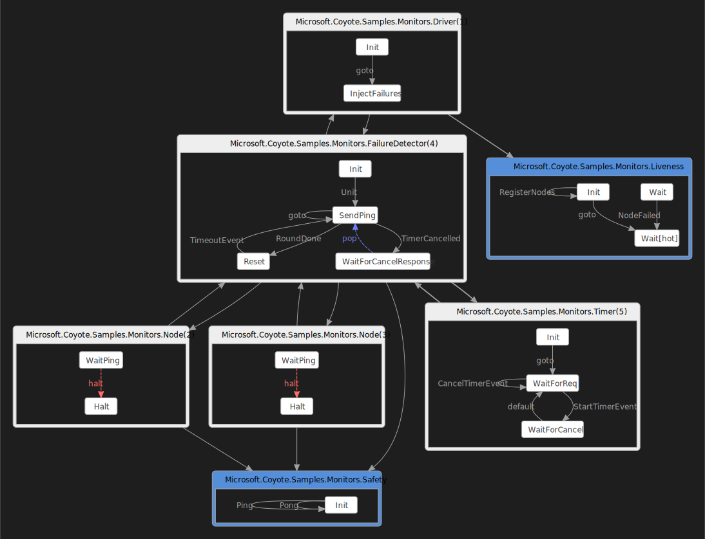

Bug in failure detector
There is a particularly hard bug to find in the coyote-samples/Monitors sample application. If you
run this application from your command prompt it will write output forever. It seems perfectly
happy, right? But there is a bug that happens rarely, the kind of pesky bug that would keep you up
late at night scratching your head. Read further to learn how to find this bug using Coyote!
What you will need
You will also need to:
- Install Visual Studio 2019.
- Install the .NET 5.0 version of the coyote tool.
- Clone the Coyote Samples git repo.
- Be familiar with the
coyotetool. See using Coyote.
Build the samples
Build the coyote-samples repo by running the following command:
powershell -f build.ps1
Run the sample
Let’s see if Coyote can find the bug in this sample. Type coyote -? to see the help page to make
sure you have installed it correctly. Now you are ready to run a coyote test as follows:
cd coyote-samples
coyote test ./bin/net5.0/Monitors.dll --iterations 1000 --max-steps 200
This also runs perfectly up to 1000 iterations. So this is indeed a hard bug to find. It can be
found using the PCT exploration strategy with a given maximum number of priority switch points
--sch-pct (or with the default Random exploration strategy, but with a much larger number of
iterations, typically more than 100,000 of them).
coyote test ./bin/net5.0/Monitors.dll --iterations 1000 --max-steps 200 --sch-pct 10
Even then you might need to run it a few times to catch the bug. Set --iterations to a bigger
number if necessary. You can also let coyote decide which exploration strategy to use. Just use
--sch-portfolio and size --parallel N and Coyote will run N different exploration strategies
for you, in parallel. coyote manages the portfolio to give you the best chance of revealing bugs.
These strategies were developed from real-world experience on large products in Microsoft Azure.
When you use the right scheduling strategy, you will see a bug report:
... Task 0 found a bug.
... Emitting task 0 traces:
..... Writing .\bin\net48\Output\Monitors.exe\CoyoteOutput\Monitors_0_0.txt
..... Writing .\bin\net48\Output\Monitors.exe\CoyoteOutput\Monitors_0_0.schedule
The *.txt file is the text log of the iteration that found the bug. The *.schedule contains the
information needed to reproduce the bug.
Finding a hard to find bug is one thing, but if you can’t reproduce this bug while debugging there
is no point. So the *.schedule can be used with the coyote replay command as follows:
coyote replay ./bin/net5.0/Monitors.dll
.\bin\net48\Output\Monitors.exe\CoyoteOutput\Monitors_0_0.schedule
. Reproducing trace in coyote-samples\./bin/net48/Monitors.exe
... Reproduced 1 bug.
... Elapsed 0.1724228 sec.
Attach a debugger during replay and you can see what exactly is going wrong.
You might be wondering what the Monitors sample app is really doing. The coyote command line
tool can help you with that also. If you run the following command line it will produce a DGML
diagram of the state machines that are being tested:
coyote test ./bin/net5.0/Monitors.dll --iterations 10 --max-steps 20 --graph
You will see the following output:
... Emitting graph:
..... Writing .\bin\net48\Output\Monitors.exe\CoyoteOutput\Monitors_0_1.dgml
Open the DGML diagram using Visual Studio 2019 and you will see the following:

Download the Monitors.dgml file to view it interactively using
Visual Studio. Make sure the downloaded file keeps the file extension .dgml. Use CTRL+A to select
everything and this will show you all the detailed links as well.